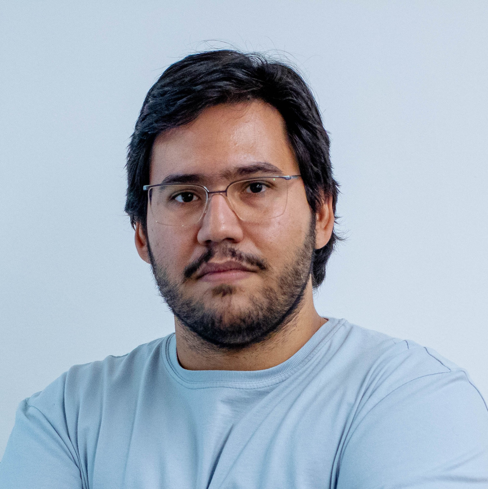

|
|  |
|
Danillo Arigoni
Artificial Intelligence Researcher
Alfaneo
Address: Campo Grande, Mato Grosso do Sul (MS), Brazil
Email: dcaa (at) outlook (dot) com (dot) br
|
Biography
I am currently an Artificial Intelligence Researcher at Alfaneo and a
PhD student in Computer Science at the School of Computing (FACOM),
the Federal University of Mato Grosso do Sul (UFMS), advised by
Prof. Renato Porfirio Ishii.
Education
- Ph.D. in Computer Science
School of Computing (FACOM), Federal University of Mato Grosso do Sul (UFMS)
Advisors: Prof. Renato Porfirio Ishii
March 2023 - Present
- M.Sc. in Computer Science
School of Computing (FACOM), Federal University of Mato Grosso do Sul (UFMS)
Advisors: Prof. Ricardo Ribeiro dos Santos and Prof. Liana D. Duenha Garanhani
March 2020 - July 2022
- Bs. in Computer Engineering
School of Computing (FACOM), Federal University of Mato Grosso do Sul (UFMS)
2013 - 2018
CV and Publications
-
CV Lattes
Lattes Database System - CNPq
| |